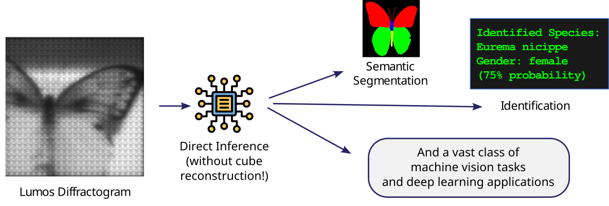
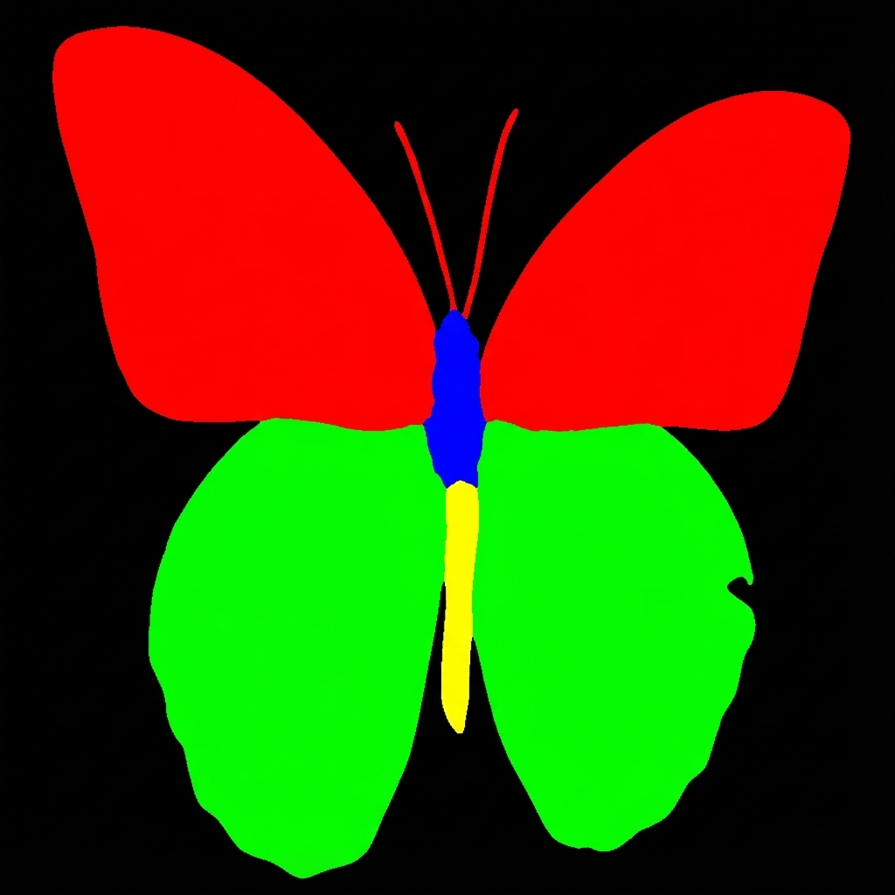

Algorithmic Processing & Inference
From Diffractogram to Insight
Once the Diffractogram is captured, the Lumos software stack offers two distinct processing pathways. This flexibility allows the system to adapt to the specific requirements of the application—optimizing for either human interpretation (Reconstruction) or data efficiency and machine speed (Direct Inference).
Option 1: Multispectral Cube Reconstruction
For applications requiring traditional spectral analysis, scientific visualization, or compatibility with legacy software (like ENVI), we computationally reconstruct the full Hyperspectral Cube.

Advantages of Computational Decoding
This approach offers significant flexibility over traditional hardware-fixed systems:
- On-Demand Decoding: We can choose to reconstruct the full image or only a specific Region of Interest (ROI). This saves massive amounts of compute power.
- Lean Storage: We only need to store the raw Diffractograms (which are small and efficient). The heavy 3D cubes can be generated only when needed, and discarded afterwards.
- Legacy Compatibility: The output is a standard .HDR/.ENVI spectral cube, making it instantly compatible with decades of existing spectral analysis software.
- User-Defined Bands: The spectral discretization happens in software. A user can request 4 bands, 20 bands, or 50 bands from the same raw data. This allows for optimization based on the specific application, avoiding the waste of processing hundreds of unnecessary bands (a common inefficiency in traditional HSI).
Option 2: Direct Inference & Efficient Transmission
This pathway leverages the Diffractogram as a highly efficient data container. It is the optimal choice for bandwidth-constrained environments (Satellites, UAVs) or high-speed automation.

Use Case A: Efficient Transmission (Satellite & Cloud)
In scenarios like Earth Observation or Drone Inspection, the bottleneck is the radio link. Transmitting a full 50-band hyperspectral cube is often impossible. * Workflow: The satellite captures and transmits only the raw Diffractogram (2D Grayscale). * Benefit: This reduces the downlink data volume by ~50x. * Processing: The heavy computational lifting (Reconstruction) is performed on the ground (in the Cloud) where power and compute are abundant. This enables high-fidelity spectral monitoring from platforms with limited telemetry.
Use Case B: Edge AI (Real-Time Automation)
For machine vision, a sorting robot does not need to “see” the spectrum; it needs to know “Is this object Plastic A or Plastic B?” * Latent Space Logic: The Diffractogram contains all the information of the scene, compressed optically. We train Deep Learning models (Deep Neural Networks) to map the textures of the Diffractogram directly to the desired output labels. * Benefit: Bypasses the computational cost of reconstruction, enabling inference in milliseconds (e.g., >60 FPS on standard edge hardware).
- Benefit: Bypasses the computational cost of reconstruction, enabling inference in milliseconds (e.g., >60 FPS on standard edge hardware).
Interactive Inference Examples
Explore how the same Lumos hardware can answer different questions just by changing the software model.
Goal: Identify regions of the image (Butterfly vs. Background). Input: Single Diffractogram Frame. Output: Binary Mask.

Goal: Classify the specific type of object. Input: Single Diffractogram Frame. Output: Class Label (e.g., “Monarch Butterfly”).
Unlike RGB, which might be fooled by a similar-looking mimic, the spectral signature in the diffractogram provides a chemical fingerprint for accurate ID.

| Option 1: Reconstruction | Option 2: Direct Inference & Transmission | |
|---|---|---|
| Primary Goal | Human Interpretation / Science | Bandwidth Efficiency / Automation |
| Data Output | 3D Data Cube | Raw Diffractogram OR Class Label |
| Typical Workflow | Capture \(\to\) Reconstruct \(\to\) Analyze | Capture \(\to\) Transmit \(\to\) Cloud Process |
| Latency | Seconds / Minutes | Milliseconds (Inference) / Real-time (Transmission) |
| Data Volume | Expands to GBs | Remains Compressed (MBs) |